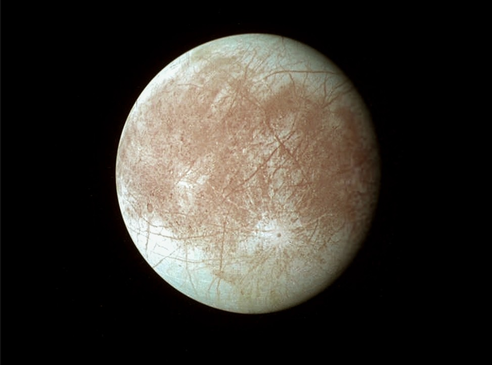

Europa — Jupiter`s Icy Moon
Europa is one of Jupiter`s four largest moons, known as the Galilean moons. It is one of the most interesting places in the solar system because scientists believe it may have a huge ocean hidden beneath its icy surface.
Europa`s surface is covered with bright ice and long cracks. These cracks suggest that the icy crust may move and change over time. Because liquid water is one of the key ingredients for life, Europa is often studied as a possible place where simple life could exist.

Why Europa Is Important
Europa is important because it may contain more liquid water than all of Earth`s oceans combined. The ocean is thought to be underneath a thick layer of ice.
Scientists are interested in Europa because it has water, chemical energy, and a rocky interior, which are important when studying whether life could exist beyond Earth.
Europa is also affected by Jupiter`s strong gravity. As it orbits, it is stretched and squeezed, creating heat inside the moon. This helps keep the underground ocean from freezing completely.
Facts About Europa
- Europa is one of Jupiter`s four Galilean moons.
- It has a bright icy surface with cracks and lines.
- Scientists believe it may have a hidden ocean.
- Europa is slightly smaller than Earth`s Moon.
- It orbits Jupiter in about 3.5 days.
- It is one of the best places to search for life.
Europa Data
- Diameter: 3,121 km
- Distance from Jupiter: 671,000 km
- Orbit Time: 3.5 Earth days
- Surface: Ice
- Main Feature: Subsurface ocean
- Discovery: Galileo (1610)